Dream Places to Visit
A Journey Through My Travel Aspirations
About My Travel Dreams
Travel has always been one of my greatest passions. There's something magical about exploring new cultures, experiencing different traditions, and immersing myself in breathtaking landscapes. This page showcases the places I dream of visiting someday, each holding a special appeal that captures my imagination.
World Map of Dream Destinations
Click on a highlighted region to learn more about my dream destinations:
Click on the highlighted points to navigate to the respective destinations.
My Dream Destinations
Santorini, Greece
Why I Want to Visit: Santorini has captivated my imagination with its stunning white-washed buildings contrasted against the deep blue Aegean Sea. The island's unique architecture, perched on dramatic cliffs formed by a volcanic eruption, creates one of the most breathtaking views in the world. I'm drawn to its rich history dating back to ancient civilizations and the romantic ambiance that makes it a perfect escape.
What I Want to Experience:
-
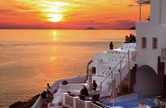Watch the legendary sunset from Oia's famous viewpoint as the sky paints the white buildings in golden hues
-
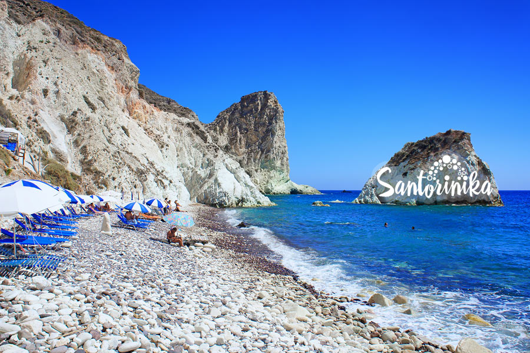Swim in the crystal-clear waters and explore the unique red and black volcanic sand beaches
-
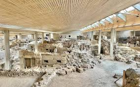Explore the ancient ruins of Akrotiri, often called the "Minoan Pompeii"
Kyoto, Japan

Why I Want to Visit: Kyoto represents the perfect blend of tradition and natural beauty that I've always been drawn to. As Japan's former imperial capital for over 1,000 years, Kyoto preserved its cultural heritage even as the rest of Japan modernized. The city's commitment to maintaining its temples, shrines, gardens, and traditional wooden architecture creates a living museum that offers a glimpse into Japan's rich past while still being a vibrant, living city.
What I Want to Experience:
-
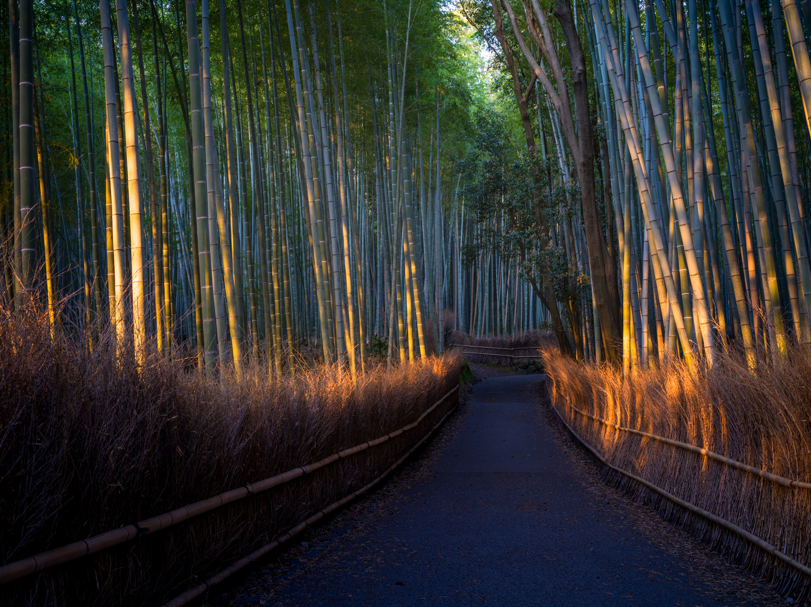Walk through the mesmerizing Arashiyama Bamboo Grove, listening to the sound of bamboo stalks swaying in the wind
-
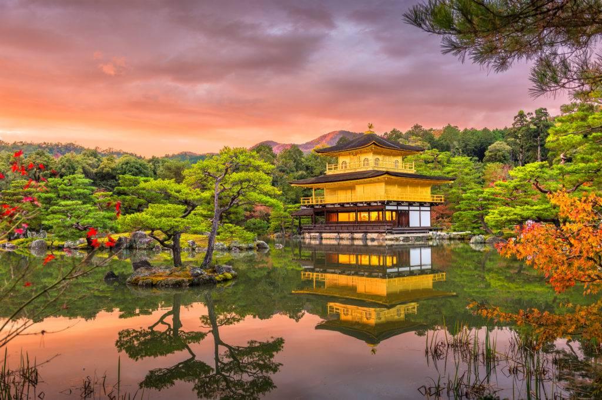Visit the golden Kinkaku-ji Temple, seeing its perfect reflection in the surrounding pond
-
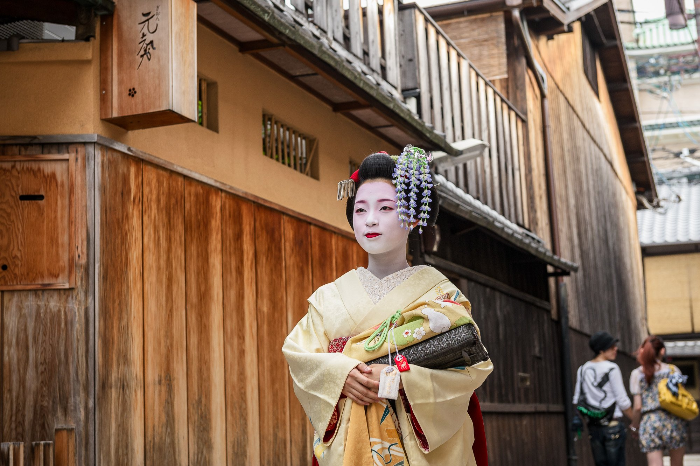Experience a traditional tea ceremony and explore the historic Gion district
Iceland

Why I Want to Visit: Iceland's otherworldly landscapes have always fascinated me - it's like visiting another planet without leaving Earth. The land of fire and ice offers a unique combination of glaciers, volcanoes, geothermal hot springs, and lava fields that create a surreal environment. What attracts me most is the raw, untamed nature and the opportunity to experience natural phenomena like the Northern Lights and the midnight sun that can't be found in most other places.
What I Want to Experience:
-
 Witness the magical Northern Lights dancing across the night sky
Witness the magical Northern Lights dancing across the night sky -
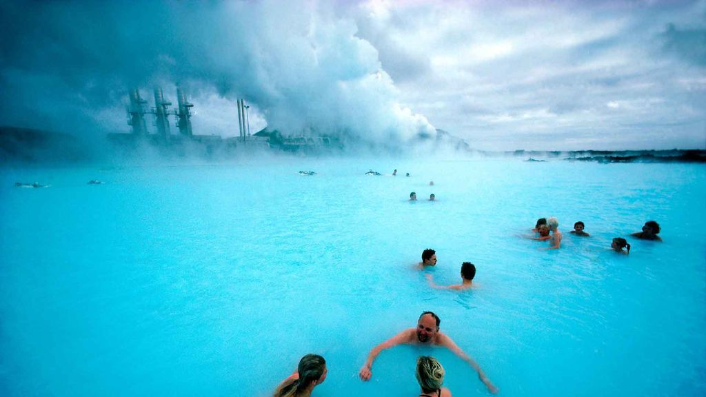Relax in the geothermal waters of the Blue Lagoon surrounded by lava fields
-
 Experience the power of Gullfoss waterfall and explore ice caves inside the glaciers
Experience the power of Gullfoss waterfall and explore ice caves inside the glaciers
New Zealand

Why I Want to Visit: New Zealand's diverse landscapes - from lush rainforests and pristine beaches to snow-capped mountains and volcanic terrain - make it the ultimate playground for nature lovers and adventure seekers. Made famous as the filming location for "The Lord of the Rings," this country offers an unparalleled concentration of natural wonders in a relatively small area. I'm drawn to its combination of breathtaking scenery, unique wildlife, and the rich Maori culture that adds a fascinating cultural dimension to its natural beauty.
What I Want to Experience:
-
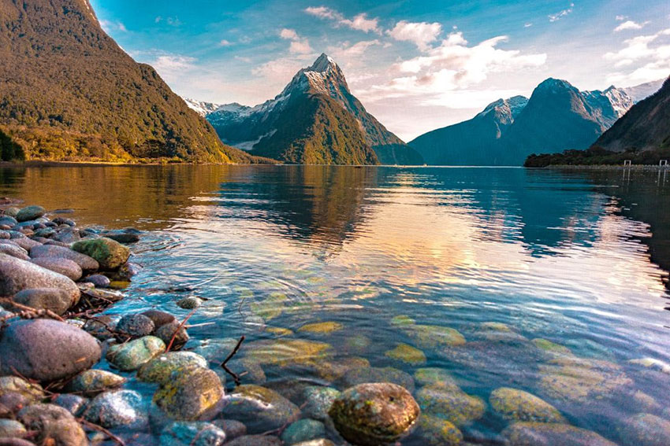Take in the breathtaking views of Milford Sound, with its towering waterfalls and peaks
-
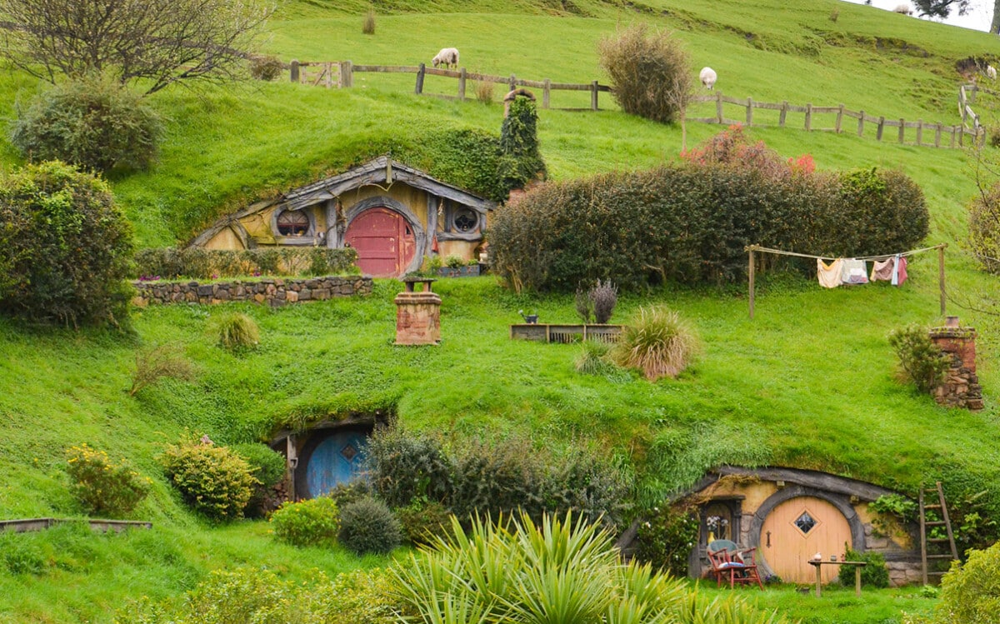Explore Hobbiton, the Lord of the Rings movie set, and feel like I'm in Middle-earth
-
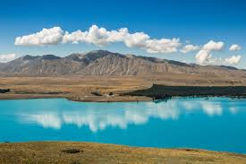Go stargazing at Lake Tekapo's Dark Sky Reserve and experience Maori cultural traditions
Bali, Indonesia

Why I Want to Visit: Bali's unique combination of stunning beaches, lush rice terraces, spiritual temples, and vibrant culture has long been on my travel wishlist. Known as the "Island of the Gods," Bali offers a perfect balance between natural beauty, spirituality, and adventure. What appeals to me most is the island's distinct character - its unique Hindu culture in predominantly Muslim Indonesia has created a place with beautiful ceremonies, traditional dances, and an artistic heritage that permeates everyday life.
What I Want to Experience:
-
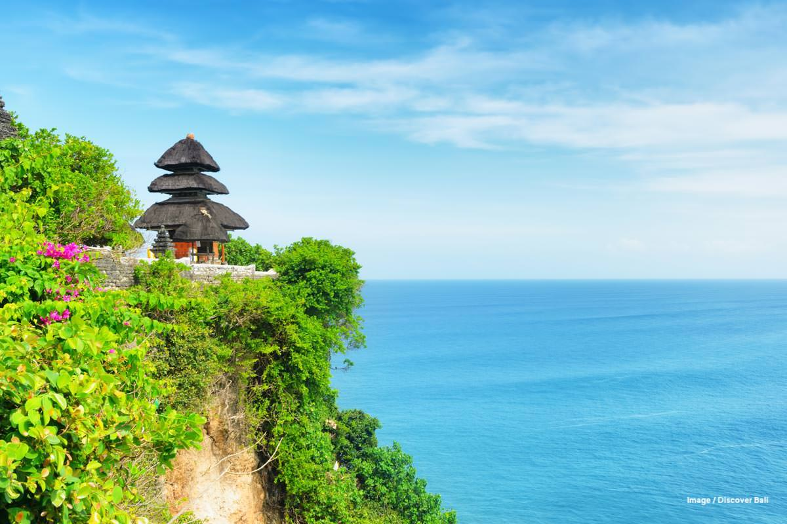Visit the sacred Uluwatu Temple perched on a cliff and watch a traditional Kecak fire dance at sunset
-
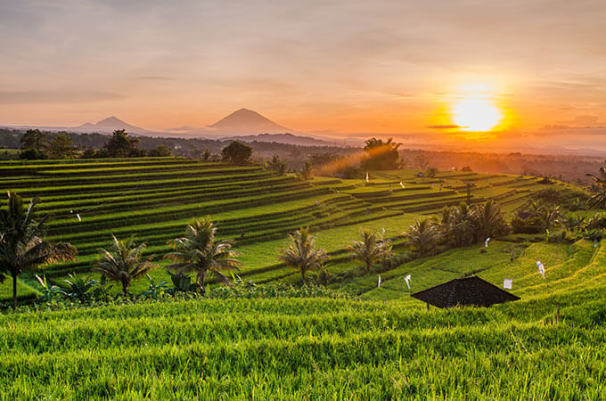Explore the emerald-green Tegallalang Rice Terraces with their intricate irrigation system
-
 Hike up Mount Batur for sunrise and participate in a traditional Balinese ceremony
Hike up Mount Batur for sunrise and participate in a traditional Balinese ceremony